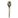
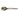
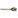

Your poetry class has just ended, and you feel a distinct pain in your liver. All in all, this is fairly minor; just last week Joyce came down with a serious case of Faux-Palatal Dermatitis.
 I schedule an appointment with my doctor immediately.
 I ask Joyce for advice.
 I grimace and ignore it.